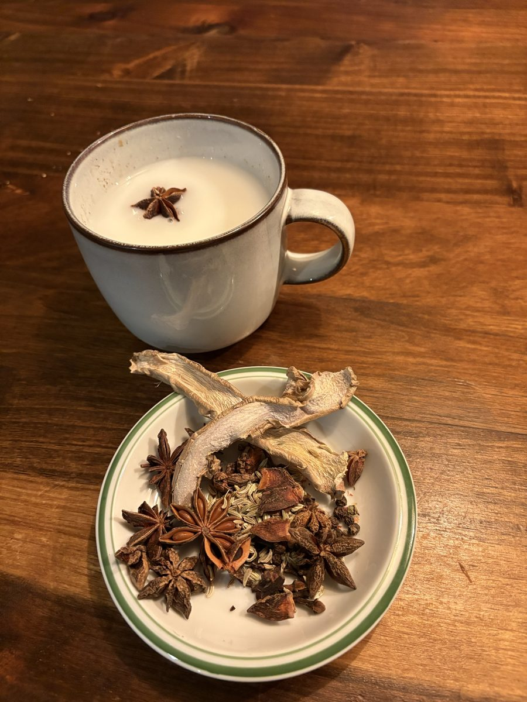

A história do Chai: das naus da Índia à alfarroba do Algarve
O chai nasceu de especiarias que viajavam pelas rotas entre a Índia e o mundo. O Alkarub Chai traz essa viagem de volta ao Algarve, de onde partiram as naus, e junta-lhe a alfarroba, uma das árvores mais antigas da nossa terra.
Chai: uma palavra, uma viagem
«Chai» quer dizer simplesmente «chá» em várias línguas do subcontinente indiano. O masala chai é uma bebida de especiarias, quente e aromática, que se bebe tradicionalmente com leite. É uma bebida de conversa e de hospitalidade.
O Algarve, terra de partidas
As especiarias que deram forma ao chai chegaram à Europa por caminhos que os navegadores portugueses ajudaram a abrir. O Algarve, com Lagos e Sagres, foi ponto de partida e de preparação dessas viagens.
Conta-se que nas naus seguia também alfarroba, um alimento que se conserva bem e dá energia, para os marinheiros e para os animais que iam a bordo. A alfarroba partiu, portanto, do Algarve muito antes de se tornar o nosso chá.

O encontro da alfarroba com as especiarias
O Alkarub Chai junta as duas pontas dessa história. De um lado, a alfarroba do Algarve, naturalmente doce, com notas de cacau e um sabor aveludado. Do outro, as especiarias da Rota das Índias, que trazem calor e aroma.
No total são 8 ingredientes, misturados à mão em Budens: alfarroba do Algarve (65%), canela, gengibre, cardamomo, funcho, cravinho, pimenta preta e anis-estrelado.
Um chai suave, sem exageros
A alfarroba não tem cafeína nem teína nem precisa de açúcar para ser doce, e as especiarias dão-lhe carácter. Com leite, a bebida fica ainda mais cremosa e aveludada. As especiarias são usadas há séculos pelo aroma e pela tradição de bem-estar de muitas culturas, e é assim que as apresentamos, como um prazer e um hábito, e sem prometer curas.
Como beber
Pode fazer-se com leite de vaca, com leite de outros animais ou com bebida vegetal. Ferva 1 saqueta em 100 ml de água durante 5 minutos, junte 200 ml de leite ou de bebida vegetal e aqueça. Esprema a saqueta e sirva, adoçando a gosto.
Formato e preço
Cada pacote do Alkarub Chai tem 30 saquetas de 4 g (120 g) e custa 8,80 €. Já está disponível no site.
Perguntas frequentes
O que é o chai?
«Chai» quer dizer «chá» em várias línguas da Índia. O masala chai é uma bebida de especiarias, tradicionalmente bebida com leite.
O que é o Alkarub Chai?
É uma edição especial da Alkarub que junta a alfarroba do Algarve a 7 especiarias da Rota das Índias, 8 ingredientes no total, feita à mão em Budens.
Quanto custa e que formato tem?
Cada pacote tem 30 saquetas de 4 g e custa 8,80 €.
Com que leite posso beber?
Com leite de vaca, de outros animais ou com bebida vegetal.
Quero provar o Chai
Já pode encomendar o Alkarub Chai no site.